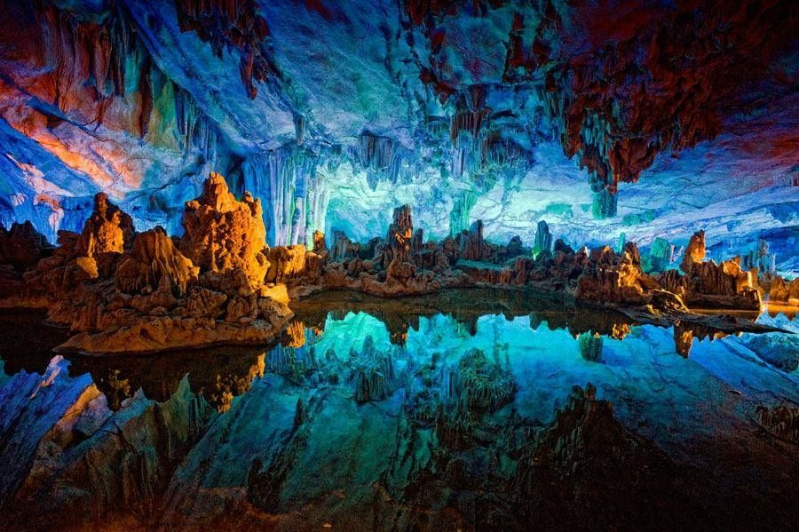
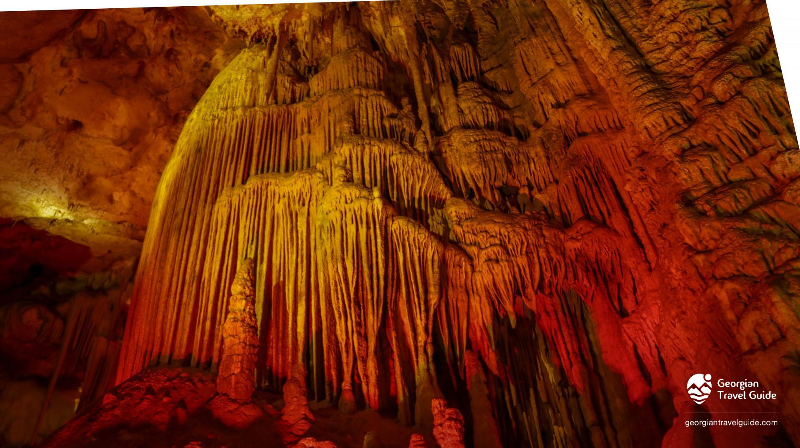
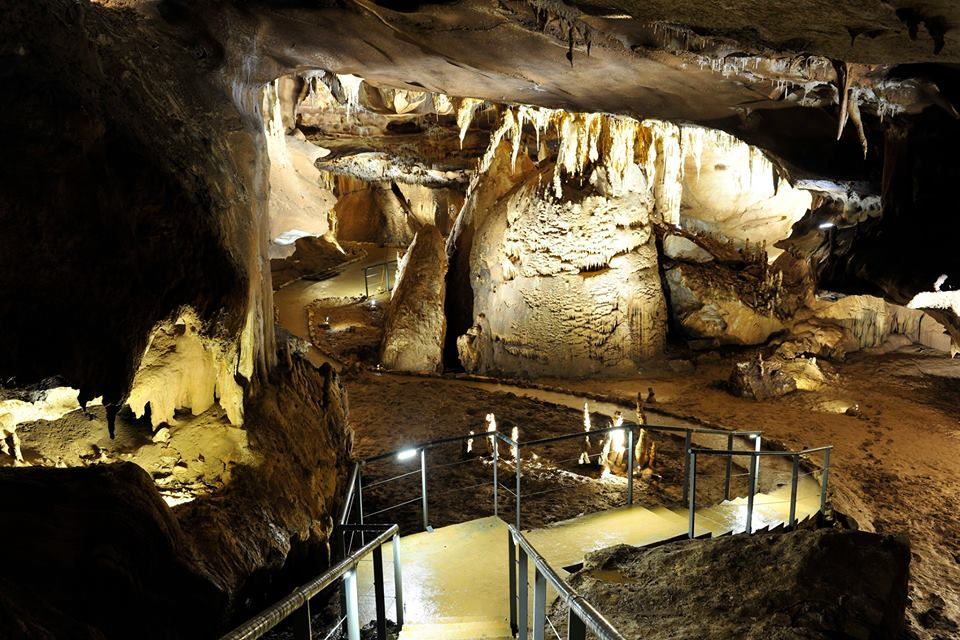
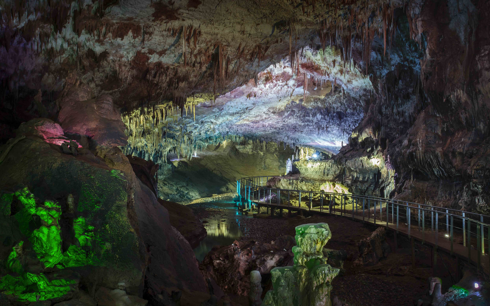
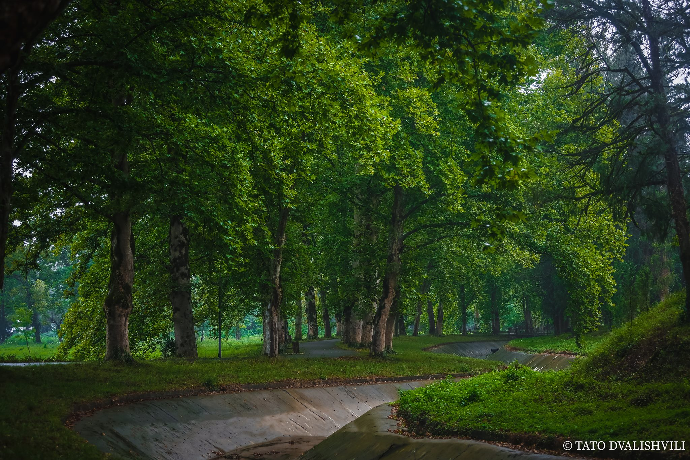
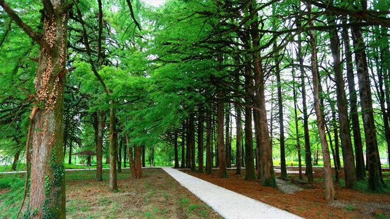
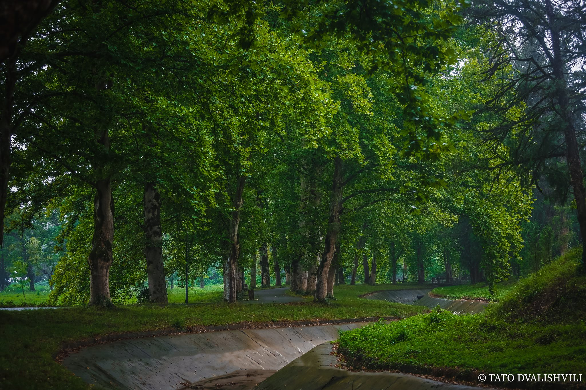
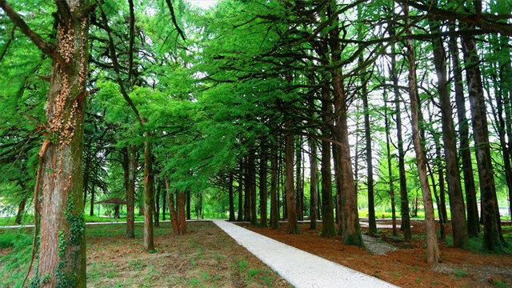

პრომეთეს მღვიმე, წყალტუბოს მღვიმე, ყუმისთავის მღვიმე — კარსტული მღვიმე საქართველოში, წყალტუბოდან ჩრდილო-აღმოსავლეთით 6 კმ-ში, ქვილიშორისა და ყუმისთავის ტერიტორიებზე, წყალტუბოს მუნიციპალიტეტში. მდებარეობს წყალტუბოს მასივზე, ყუმის ვოკლუზების ჩრდილო-აღმოსავლეთით 0,5 კმ-ში. სუბჰორიზონტული, დერეფნული ტიპის სიღრუეა. აქვს სამი შესასვლელი: ერთი მდებარეობს მშრალი ხეობის ფსკერზე, ზღვის დონიდან 147 მ სიმაღლეზე, მე-2 იხსნება 160 მ-ზე, ხოლო მე-3 ყუმის ვოკლუზიდან სიფონური ტბების ჯაჭვის გავლით, 125 მ-ზე. მღვიმეში შეღწევა შესაძლებელია აგრეთვე ღლიანას მღვიმიდანაც, 200 მ-იანი წყლიანი ტალანის გავლით.
ინსტრუმენტული აგეგმვის მონაცემებით, პრომეთეს მღვიმის ჯამური სიგრძეა 2900 მ, საშუალო სიმაღლე 7 მ, საშუალო სიგანე 10 მ, ფართობი 29000 მ², მოცულობა 203000 მ³. ძირითადი მაგისტრალის სიგრძე, რომელსაც კეთილმოწყობითი სამუშაოები შეეხო, 1060 მ-ია. კირქვების სიმძლავრე, რომლის ქვეშაც მიწისქვეშა დარბაზებია გამომუშავებული 8–52 მ, საშუალოდ კი 40 მ შეადგენს. მღვიმე მეანდრულია, გენერალური მიმართულება სამხრეთ-დასავლეთურია.
გამომუშავებულია ბარემული ასაკის სქელშრეებრივ და მასიურ კირქვებში. ჭარბობს ვერტიკალური და ციცაბოდ ვარდნილი დიაგენეტური ნაპრალების ორი სისტემა: ერთი მათგანი მიუყვება შრეების ვარდნის აზიმუტს, მეორე ორიენტირებულია შრეების განფენის გაყოლებით, ესე იგი სუბმერიდიანული, რომელიც ნულოვანი მერიდიანიდან დასავლეთით ან აღმოსავლეთით სულ 5–10°-ის ფარგლებში იხრება. ნაკლებადაა გავრცელებული ჩრდილო-დასავლური და ჩრდილო-აღმოსავლური მიმართულების დიაგონალურ ნაპრალთა სისტემები. მის ფორმირებაში მნიშვნელოვან როლს თამაშობდნენ ქანების დაშრევების ზედაპირები ანუ დიასტრომები. დახრილობა შრეების ვარდნის კუთხით განისაზღვრება.
შედგება რამდენიმე მორფოლოგიურად განსხვავებული მონაკვეთისაგან: მშრალი, ციკლგავლილი, მუდმივნაკადიანი და სიფონური. მშრალი მონაკვეთები ქმნიან ერთიან, ჰიფსომეტრიულად ყველაზე მაღალ სართულს. მდიდარია სტალაქტიტებით, სტალაგმიტებით, ჰელიქტიტებით, კედლის მოფარდაგებებით, კასკადური ნაღვენთებით, „ორღანის მილებითა“ და სხვა. გვხვდება 2 მ სიგრძის სტალაქტიტები და 8–10 მ სიმაღლის სტალაგმიტები.
ციკლგავლილი მონაკვეთები ძირითადად წარმოდგენილია მღვიმის ბოლო 300 მ-იან ნაწილში და შეიცავს ფართო, ვრცელ დარბაზებს, რომელთა ფსკერზე მუდმივი ნაკადი გაედინება. მიწისქვეშა მდინარე აქტიურ მონაკვეთს გასდევს მთელ სიგრძეზე და სიფონური ტბების ჯაჭვის გავლის შემდეგ ზედაპირზე მდინარე ყუმის ვოკლუზური წყაროს სახით გამოედინება.
მღვიმეში სულ 22 სხვადასხვა ზომის დარბაზია.[4] ვიზიტორთათვის განკუთვნილი საექსკურსიო მონაკვეთი შედგება 6 დარბაზისაგან: „არგონავტების დარბაზი“, „კოლხეთის დარბაზი“, „მედეას დარბაზი“, „სიყვარულის დარბაზი“, „პრომეთეს დარბაზი“, „საქართველოს“ ანუ „იბერიის დარბაზი“. აქვს ორი გასასვლელი: ერთი ბოლოვდება მდინარით, რომელზეც ნავით გასეირნებაა შესაძლებელი, მეორე გასასვლელი კი საფეხმავლოა და მღვიმის დარბაზიდან გარეთ გამოვყავართ. ტურისტული ბილიკის სიგრძეა 1420 მ, რომელიც 380 მ სიგრძის ტბით ბოლოვდება. ტბაზე ვიზიტორებს შეუძლიათ ნავით გაისეირნონ.
პრომეთეს მღვიმის ტერიტორიის კირქვული მასივი, ნოტიო სუბტროპიკული კლიმატი და მასთან დაკავშირებული ჭარბი ტენიანობის მქონე ნიადაგები ხელსაყრელ პირობებს ქმნიან მცენარეული საფარის სწრაფი ზრდა-განვითარებისათვის. ადრე მღვიმის ზედაპირი დაფარული იყო ფართოფოთლოვანი კოლხური ტიპის ტყით, თუმცა ანთროპოგენური ზემოქმედების შედეგად ტყე გადაგვარდა და ძირითადად ბუჩქნარი მცენარეულობაა გავრცელებული. ერთეული სახით გვხვდება კავკასიური რცხილა, ქართული მუხა, აღმოსავლური წიფელი, წაბლი; ბუჩქებიდან კოლხური ბზა, ძმერხლი და სხვა.
პრომეთეს მღვიმის მიმდებარე ტერიტორიის ფაუნას ქმნიან: ტურა, მაჩვი, ტყის კვერნა, კავკასიური ციყვი, აგრეთვე რამდენიმე სახეობის რეპტილია და ამფიბია. ფრინველებიდან აღსანიშნავია მერცხალი, სკვინჩა, შაშვი და ჩხიკვი.
პრომეთეს მღვიმეში ტემპერატურა მუდმივად 14°C-ია. მიკროკლიმატის გამო მღვიმე დასახლებულია სიბნელესთან იოლად ადაპტირებადი ორგანიზმებით: ღამურებით, მტკნარი წყლის მოლუსკებით, ობობებითა და ხოჭოებით.
პრომეთეს მღვიმე 1983 წლის 15 ივლისს ვახუშტი ბაგრატიონის გეოგრაფიის ინსტიტუტის სპელეოლოგიური ექსპედიციის წევრებმა ჯუმბერ ჯიშკარიანის ხელმძღვანელობით აღმოაჩინეს. საინტერესო ტურისტული ობიექტია. 2018 წელს პრომეთეს მღვიმეს 155000 ვიზიტორი ეწვია, ხოლო 2019 წელს, ხუთ თვეში 41327 ვიზიტორი.




 


